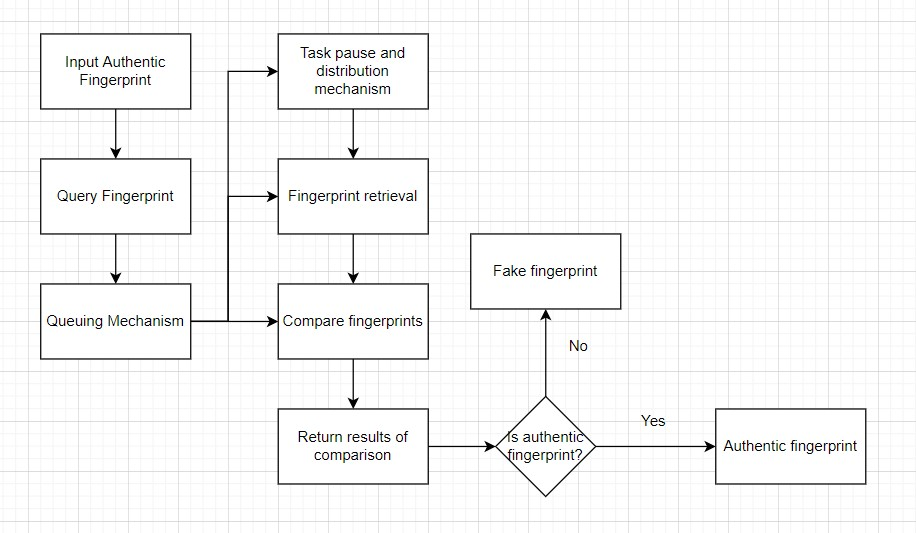

As technology has grown to become more advanced the need for security has equally grown. The internet has become so readily available as it has been introduced into our homes and has become integrated into our lives. However, this means that those who wish to misuse the internet equally have access to it. The average person can be easily preyed upon by those with malicious intents and thus the responsibility of keeping the internet safe falls on us with knowledge.

Cyber Security
Encryption of data alluded the internet with the original HTTP web connection. Websites could be impersonated and while this wasn't a problem at the start of the internet, as businesses began creating online platforms, personal information such as social security numbers and checking accounts were being put in harms way. The encrypted version - HTTPS - was then created. While it was expensive and difficult to maintain and run a web server it was a more secure option. HTTPS used a secure connection known as either SSL (Secure Sockets Layer) or TLS (Transport Layer Security). In the current day technology has advanced to the point that HTTPS web connections can be maintained at all times. The primary purposes of this connection is to encrypt user data and to authenticate connection between user and website. However, the use of HTTPS Proxy Appliances has made it so that the encryption of HTTPS can be bypassed. This is done by using a third-party application that intercepts the encrypted traffic before passing it to the intended destination (Gibson, 2020). This "Man In The Middle" (MITM) can be dangerous as a user can be completely unaware of the interception (College Languages, 2022). Normally the "Certificate Authorities" (CA) passes a users encrypted data after a website has sufficiently proven it's identity (Gibson, 2020). However, the use of "Pseudo Certificate Authorities" can be easily done and grants access to all the users data. While a SSL interception can not be prevented it can be detected and thus a user can avoid a fraudulent web connection (Gibson, 2020). This can be done due to the property that a security certificate can not be perfectly recreated. A security certificate compromises of a complex algoritm known as a hash. Hashes are remarkable as if even one part of the hash is changed, about half of the hash is changed in response. Due to its reliability and security, much of the industry has switched to the "Secure Hashing Algoritm 1" (SHA1) (Gibson, 2020). Often thses big companies such as Google deploy multiple security certificates, however, this can cause problems with security tools such as a false-negative - when a security tool fails to detect a particular threat - and a false positive - when a security tool misdetects a vulnerability as present (National Institute Of Standards And Technology, n.d.).
The Future
As we've looked at in the previous paragraph, the use of Pseudo Certificate Authorities has allowed the privacy of an individual to be invaded and monitored, often without the knowledge of the user (Gibson, 2020). This raises the question "Should organizations have the right to eavesdrop on our communications?" Unfortunatly the answer to this question is subjective to whoever you ask. The experiences of a common internet user differs from a professional software engineer. The trauma that a scam victim has indured can influence their opinion more than a child who scrolls through Youtube. Either extreme has large consequences that the majority of people can't live with. There is always one side that loses out. My personal belief is that there should be some monitoring of users by an organization, however to a small degree. Users should be tracked if they can be deemed unsafe to society, but the common man should not suffer for the faults of others.
References
Editot, C. S. R. C. C. (n.d.). False negative - glossary: CSRC. CSRC Content Editor. Retrieved August 25, 2022, from https://csrc.nist.gov/glossary/term/false_negative#:~:text=Definition(s)%3A,threat%20fails%20to%20do%20so.
Editor, C. S. R. C. C. (n.d.). False positive - glossary: CSRC. CSRC Content Editor. Retrieved August 25, 2022, from https://csrc.nist.gov/glossary/term/false_positive#:~:text=Definition(s)%3A,that%20malicious%20activity%20is%20occurring.
Oxford languages and google - english. Oxford Languages. (n.d.). Retrieved August 25, 2022, from https://languages.oup.com/google-dictionary-en/
Steve Gibson, G. I. B. S. O. N. R. E. S. E. A. R. C. H. C. O. R. P. O. R. A. T. I. O. N. (n.d.). GRC : SSL TLS HTTPS web server certificate fingerprints .GRC | SSL TLS HTTPS Web Server Certificate Fingerprints . Retrieved August 25, 2022, from https://www.grc.com/fingerprints.htm#top
Back to top